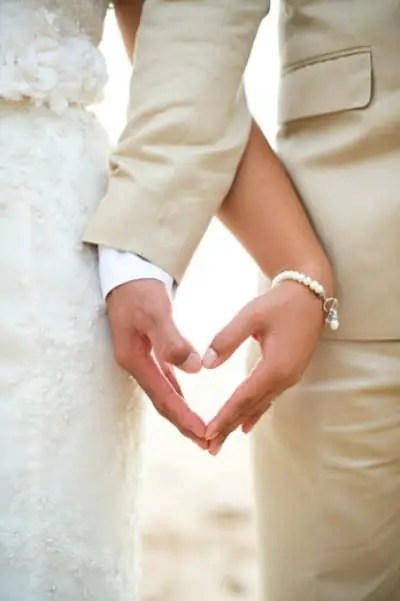
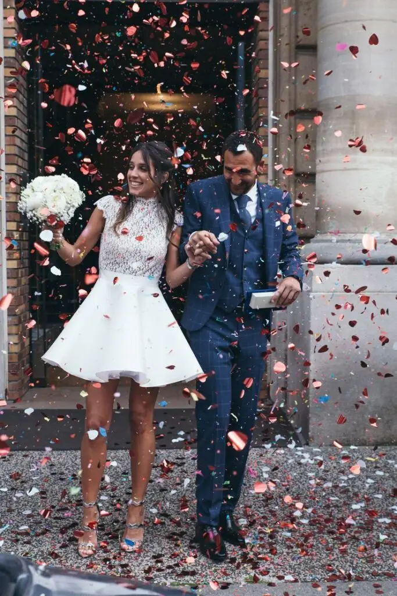
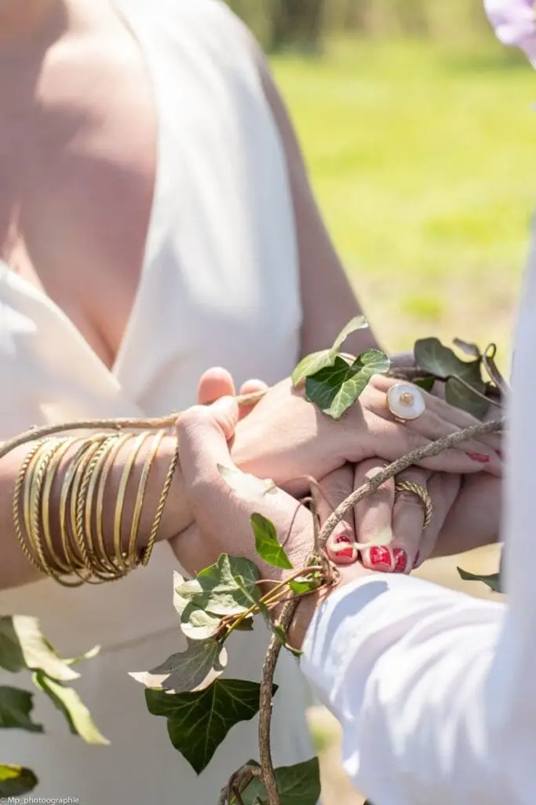
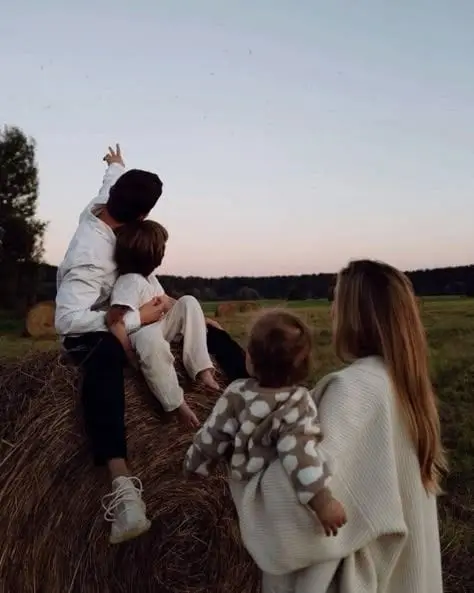
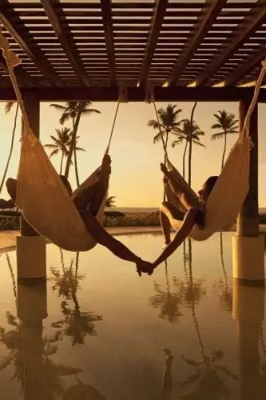
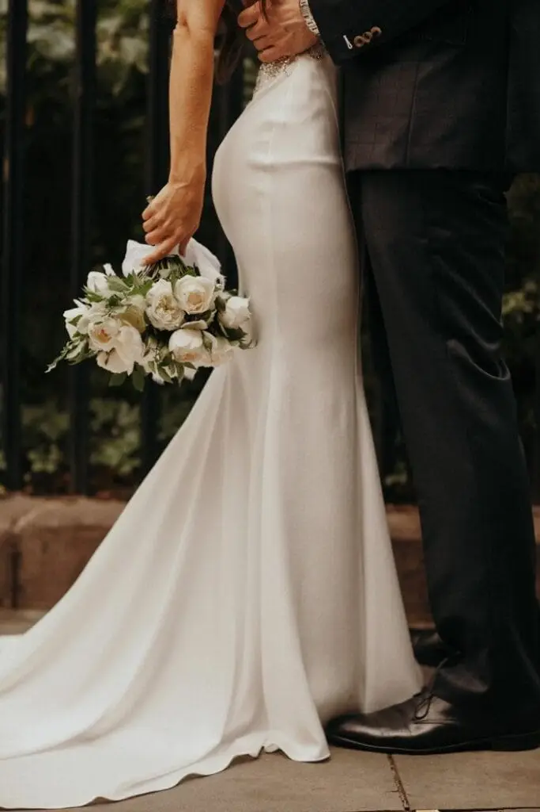

En 2025, plus que jamais, l’amour est au cœur de cette transformation. Le mariage, ce grand rituel qui scelle une union, a toujours évolué avec son époque. Il se réinvente pour s’adapter aux nouvelles envies des couples : plus de personnalisation, moins de conventions, et surtout, une célébration qui reflète les valeurs et les rêves des futurs mariés. Exit les mariages formatés, place à des unions audacieuses, profondément sincères et résolument modernes.
L’amour avec un grand A est-il toujours possible dans ce monde ?

L’amour avec un grand A, qu’on retrouve souvent dans les livres ou dans les temps passés. Il peut être toujours possible, même dans notre monde moderne marqué par des rythmes de vie effrénés et la technologie omniprésente. En mettant l’accent sur l’authenticité, la communication sincère, le temps et l’attention consacrés aux moments partagés, ainsi que la patience et l’empathie pour comprendre et soutenir son partenaire. Cela nécessite une volonté de grandir ensemble, de surmonter les défis à deux et de cultiver une relation basée sur le respect, la bienveillance et la passion mutuelle.
Le mariage, une célébration de l’amour sous toutes ses formes
Longtemps perçu comme une institution rigide, le mariage évolue aujourd’hui pour s’adapter à la diversité des relations et aux nouvelles manières d’aimer.
- Un mariage sur-mesure, loin des conventions : Grandiose ou intimiste, traditionnel ou original, le mariage devient avant tout un reflet du couple. L’important n’est plus de suivre des codes établis, mais de créer une union qui a du sens et qui célèbre l’amour dans toute sa singularité.
- L’amour sous toutes ses expressions : Aujourd’hui, chacun peut exprimer son amour selon ses propres valeurs et aspirations.
- Une symbolique réinventée : Plus qu’un simple contrat, le mariage se transforme en un engagement évolutif, une promesse d’amour et de partage qui peut s’adapter au fil du temps.
- Vers une célébration universelle de l’amour : Au-delà du mariage traditionnel, d’autres formes d’union voient le jour : PACS, union libre, promesses de vie commune… Chaque couple, chaque individu construit sa propre définition du bonheur et de l’amour.
L’essentiel ? Que l’amour reste au centre, sous la forme qui lui convient le mieux.

Quand tradition et modernité se disent "oui" au nom de l’amour
Qui a dit que tradition et modernité étaient incompatibles ? En 2025, la technologie s’invite aux mariages… et pas seulement pour la playlist du DJ !
- Cérémonies en réalité virtuelle : Offrir aux invités à distance une immersion totale, pour qu’ils partagent l’émotion et l’amour du moment comme s’ils y étaient.
- Drones caméras : Capturer des images spectaculaires et transformer la vidéo du mariage en un véritable film cinématographique, à la hauteur de cet amour unique.
- Invitations digitales et sites web personnalisés : Finis les cartons papier, place à une organisation plus fluide, au service d’un mariage qui célèbre l’amour à l’ère du numérique.
- Hologrammes pour une ouverture de bal futuriste : Et si le couple projetait son amour sous forme d’hologrammes pour un moment inoubliable sur la piste de danse ?
En 2025, l’amour se vit et se célèbre sous toutes ses formes, en fusionnant tradition et innovation pour des souvenirs encore plus magiques !
Dire oui… Mais à sa manière.
Fini le mariage traditionnel imposé par les générations précédentes. Aujourd’hui, chaque couple veut créer une cérémonie à son image, portée par l’amour et l’authenticité.
Certains optent pour des cérémonies symboliques en pleine nature, au cœur de la forêt des Landes. D’autres préfèrent un échange de vœux intimiste sur un rooftop avec une vue imprenable sur la Garonne. Certains abolissent même l’idée d’une cérémonie unique et choisissent une série de célébrations dans plusieurs pays ou avec différents groupes d’amis.
L’important ? Que le mariage soit une véritable déclaration d’amour… mais aussi de liberté et de passion !
Un engagement écoresponsable
Les mariages grandioses laissent peu à peu la place à des événements plus respectueux de la planète. En 2025, les couples font le choix d’un mariage éthique, où amour et engagement riment avec écologie.
Robes de mariée en tissus recyclés ou vintage, décorations florales locales et de saison, alliances fabriquées à partir d’or recyclé… Chaque détail devient une déclaration d’amour, non seulement entre deux personnes, mais aussi envers la nature.
Les réceptions s’adaptent aussi : buffets anti-gaspillage, traiteurs locavores, zéro plastique… Se marier tout en réduisant son empreinte carbone, c’est la nouvelle définition du chic et d’un amour conscient.
Une mode nuptiale libérée des codes
En 2025, la mariée ne se sent plus obligée de porter une robe blanche traditionnelle. On ose la couleur, les ensembles pantalon, les robes courtes ou asymétriques. Certains couples optent même pour des tenues assorties, créant une esthétique harmonieuse et moderne.
Et du côté des invités, fini le dress code strict ! Place à l’expression personnelle avec des looks qui reflètent leur propre style.
L’expérience avant tout : surprendre et marquer les esprits.
Ce qui compte désormais dans un mariage bordelais, c’est l’expérience vécue. Les couples veulent surprendre leurs invités avec des animations inédites :
- Dîners immersifs, où chaque plat raconte une histoire ou évoque un moment fort de leur relation.
- Concerts live ou performances artistiques, pour donner à la soirée des allures de festival privé.
Jeux interactifs et escape games, pour rendre le mariage encore plus fun et participatif.
L'évolution de l'amour au sein du couple
Le mariage n’est plus perçu comme un point final, mais comme une étape évolutive. Certains couples choisissent de renouveler leurs vœux tous les cinq ou dix ans, marquant ainsi les différentes phases de leur relation.
D’autres adoptent le concept du « mariage progressif » : plutôt qu’une seule cérémonie, ils organisent plusieurs événements sur plusieurs années, célébrant leur amour au fil du temps et des lieux qui leur tiennent à cœur.
Cette approche casse l’idée du “grand jour” unique et transforme le mariage en un voyage continu, rempli de nouvelles promesses et d’expériences partagées.

Une lune de miel… avant le mariage ?
Pourquoi attendre après le mariage pour partir en voyage ? En 2025, la “pré-lune de miel” devient une tendance : les couples s’offrent une escapade quelques mois avant la cérémonie pour se recentrer sur eux-mêmes, se détendre et échapper au stress des préparatifs.
D’autres choisissent de fusionner leur amour et leur voyage de noces, organisant une cérémonie intime directement à l’étranger, dans un lieu qui les inspire : une plage sauvage en Amérique du Sud, une montagne isolée au Népal, ou encore une villa secrète en Italie.
Vers un mariage plus spirituel et symbolique
De plus en plus de couples ressentent le besoin de donner une dimension spirituelle à leur union, sans forcément passer par un mariage religieux.
Les rituels prennent une place importante :
- Cérémonie du feu où les mariés écrivent leurs peurs et doutes sur un papier avant de les brûler, symbolisant un nouveau départ.
- Rituel des pierres où chaque invité dépose une pierre avec un mot ou un vœu pour le couple, créant un souvenir tangible de leur engagement.
- Célébration sous les étoiles pour se marier au clair de lune, dans une ambiance intime et mystique.
Ces rituels rendent la cérémonie encore plus unique et émotionnellement puissante.

Le mariage, un projet de vie à deux (et non une fin en soi)
Enfin, en 2025, le mariage n’est plus vu comme une finalité, mais comme une brique dans un projet de vie plus vaste.
Les couples ne se marient plus par obligation sociale, mais parce qu’ils partagent une vision commune : un mode de vie, une aventure entrepreneuriale, un engagement écologique ou humanitaire… Le mariage devient le socle d’un projet plus grand que le couple lui-même.
Les générations actuelles refusent l’idée que l’amour doit s’inscrire dans un cadre rigide. Elles préfèrent le modeler selon leurs propres aspirations et construire une relation évolutive, authentique et libre.

Vers une nouvelle définition du mariage
Finalement, se marier en 2025, ce n’est plus suivre une tradition, c’est la réinventer. C’est faire une promesse d’amour qui fait écho aux aspirations d’un couple, loin des attentes sociales figées. Que ce soit une cérémonie intime ou une grande fête extravagante, l’essentiel est de célébrer l’amour à sa façon. C’est embrasser le changement, la créativité et l’inclusivité. C’est faire le choix d’un mariage qui fait sens, loin des clichés et des conventions imposées.


Mon avis en tant que professionnelle
Le mariage d’aujourd’hui n’a plus rien à voir avec celui d’il y a dix ans. Les couples veulent avant tout un événement qui leur ressemble, quitte à casser les codes traditionnels. Ce que je remarque chez mes clients, c’est une volonté de vivre un moment fort, mais sans contraintes inutiles. Ils cherchent une cérémonie intime ou originale, des expériences immersives pour leurs invités et une approche plus écoresponsable. Plus que jamais, le mariage devient une célébration de l’amour libre et personnalisé.
Alexandra Ambert
En bref,
Le mariage en 2025 se réinvente pour devenir une célébration libre, audacieuse et profondément personnalisée. Exit les traditions rigides, place aux cérémonies sur mesure, aux engagements écoresponsables et aux expériences immersives. La technologie s’invite à la fête avec des drones, des cérémonies en réalité virtuelle et des animations interactives. La mode nuptiale se libère des codes, et les couples privilégient des unions évolutives, symboliques et inclusives.
Selon Alexandra Ambert, wedding planner & designer de Lovely Day Event, « les mariages d’aujourd’hui sont avant tout une histoire à raconter, une expérience unique à vivre et un engagement sincère qui fait sens pour chaque couple ».
Et si le mariage n’était plus une case à cocher, mais une aventure à créer ?
Lovely Day Event c'est plusieurs types de prestations
L'organisation de mariage
Je vais intervenir sur toutes les étapes de vos préparatifs et vous guider dans vos choix. Je suis force de proposition pour que votre mariage ne ressemble qu’à vous.
Décoration de mariage
Créative et passionnée, je suis certifiée Wedding Designer et je conçois une ambiance scénographique qui correspond au thème de votre mariage.
Coordination le jour J
Je serai le chef d’orchestre pour gérer les différents prestataires, la mise en place de votre décoration et le déroulement de cette belle journée.